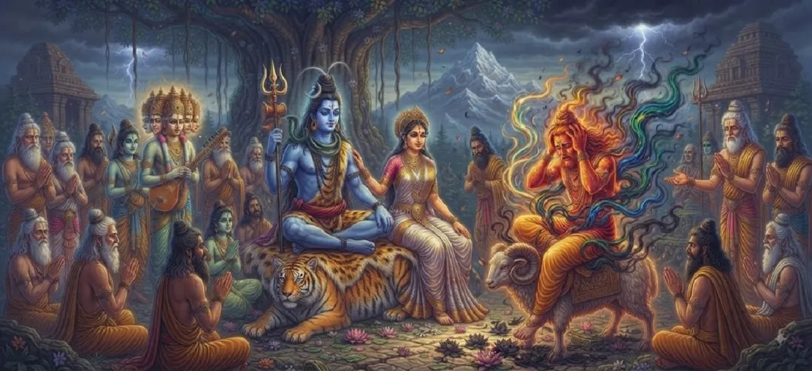

अग्नि राहत चाहती है
कुमार खण्ड के नौवें अध्याय में अग्नि को सांत्वना और परामर्श की तलाश करते हुए दर्शाया गया है क्योंकि भगवान शिव के दिव्य तेज की धधकती गर्मी उनके स्वरूप के भीतर तेजी से तीव्र होती जा रही है।
यह अध्याय परम तेजस के लिए एक उपयुक्त माध्यमिक पात्र खोजने के लिए दैवीय हस्तक्षेप की आवश्यकता पर प्रकाश डालता है।
अध्याय 9 की मुख्य बातें
तीव्र गरमी
शिव के बीज की बढ़ती गर्मी अग्नि को चुनौती दे रही है।
मार्गदर्शन के लिए अनुरोध
अग्नि राहत के लिए उच्च अधिकारियों की ओर रुख कर रहे हैं।
दिव्य सांत्वना
ब्रह्मांडीय मिशन के लिए एक स्थायी मार्ग की तलाश।
सृष्टि का संरक्षण
यह सुनिश्चित करना कि दिव्य चिंगारी सुरक्षित और संतुलित रहे।
स्थानांतरण की तैयारी
वितरण के अगले चरण के लिए मंच तैयार करना।
पवित्र परामर्शदाता
बोझ को कम करने के लिए दिव्य निर्देश प्राप्त करना।
इस अध्याय में मुख्य विषय
अग्नि की प्रार्थना और राहत के लिए अपील
तीव्र गर्मी से परेशान होकर, अग्नि ने भगवान शिव और भगवान ब्रह्मा से प्रार्थना की, अपनी दुर्दशा बताई और विनम्रतापूर्वक दिव्य बोझ को साझा करने या स्थानांतरित करने का रास्ता पूछा।
उनकी गंभीर अपील दिव्य लोकों में गूंजती है।
भगवान ब्रह्मा और अन्य देवताओं से सलाह
उनकी प्रार्थना के जवाब में, भगवान ब्रह्मा और बुद्धिमान देवता दिव्य सलाह देते हैं, अग्नि को मार्गदर्शन देते हैं कि तेजस को सुरक्षित रूप से दूसरे उपयुक्त और शुद्ध पात्र में कैसे भेजा जाए।
यह सलाह बिना किसी दुर्घटना के ईश्वरीय योजना की निरंतरता सुनिश्चित करती है।
तेजस के लिए सही समाधान ढूँढना
सभा का सामूहिक ज्ञान कार्रवाई का सही तरीका निर्धारित करता है, जो उज्ज्वल ऊर्जा प्राप्त करने के लिए अगले दिव्य जहाज के रूप में पवित्र गंगा की ओर इशारा करता है।
इस प्रकार ब्रह्मांडीय उद्देश्य को आगे बढ़ाते हुए अग्नि को राहत पहुंचाने के लिए एक योजना तैयार की जाती है।
बीज की यात्रा के अगले चरण की तैयारी
अग्नि से गंगा के पवित्र जल में तेजस के पवित्र स्थानांतरण की तैयारी चल रही है, जो महाकाव्य कथा में एक महत्वपूर्ण मोड़ है।
अगली चमत्कारी घटना के घटित होने के लिए मंच तैयार है।
दिव्य लोकों में संतुलन बहाल करना
जैसे-जैसे समाधान आकार लेता है, धीरे-धीरे स्वर्ग में सद्भाव बहाल हो जाता है, जिससे देवताओं को आश्वस्त होता है कि सभी राक्षसी खतरों को खत्म करने के लिए दिव्य सेनापति जल्द ही पैदा होंगे।
पूरे ब्रह्मांड में आशा और ईश्वरीय व्यवस्था व्याप्त है।
अध्याय 10 की ओर बीज का पवित्र स्थानांतरण
राहत और स्थानांतरण के मार्ग को स्पष्ट रूप से रेखांकित करने के साथ, कथा सीधे अध्याय 10 में चली जाती है, जहां दिव्य तेज का वास्तविक पवित्र हस्तांतरण होता है।
कुमार खण्डा की राजसी यात्रा अपनी शानदार परिणति की ओर जारी है।
अध्याय 9 की मुख्य शिक्षाएँ
परामर्श की तलाश
यह पहचानना कि भारी बोझ के लिए कब मदद मांगनी है।
तीव्रता का प्रबंधन
पूर्ण शक्ति के लिए उचित वितरण चैनलों की आवश्यकता होती है।
ईश्वरीय कृपा
संकट में प्रार्थनाओं का उत्तर हमेशा बुद्धिमत्ता से दिया जाता है।
शुद्ध पात्र
विशेष कार्यों के लिए विशिष्ट रूप से योग्य माध्यमों की आवश्यकता होती है।
सहज क्रम-विकास
किसी मिशन के चरण सहयोग के माध्यम से विकसित होते हैं।
ब्रह्मांडीय संतुलन
व्यवस्थित दिव्य समाधानों के माध्यम से शांति बहाल करना।
आध्यात्मिक चिंतन
राहत के लिए अग्नि की खोज से पता चलता है कि दैवीय एजेंट भी सीमाओं का अनुभव कर सकते हैं और उच्च परामर्श लेने से लाभ उठा सकते हैं। यह हमें सिखाता है कि जिम्मेदारियाँ साझा करना और बुद्धिमानीपूर्ण मार्गदर्शन प्राप्त करना बुद्धिमत्ता की निशानी है, कमजोरी की नहीं।
अध्याय 9 का संदेश जीना
भारी ज़िम्मेदारियों से दबे होने पर मदद या मार्गदर्शन लेने में संकोच न करें।
जटिल समस्याओं का स्थायी समाधान खोजने के लिए सामूहिक ज्ञान पर भरोसा रखें।
तीव्र दबावों को उचित रूप से वितरित और प्रबंधित करके आंतरिक संतुलन बनाए रखें।
प्रमुख आध्यात्मिक अवधारणाएँ
जलते हुए तेजस से मुक्ति हेतु अग्नि की हार्दिक प्रार्थना।
संकट निवारण हेतु देवताओं का मंत्रणा
बीज के विषय में ब्रह्मा जी की दी हुई बुद्धिमानीपूर्ण सलाह
ब्रह्मांडीय ऊर्जा को सुरक्षित रूप से स्थानांतरित करने की योजनाबद्ध सफलता।
दिव्य शांति और आश्वासन की बहाली।
पवित्र दैवीय शक्तियों को ले जाने के लिए शुद्ध चैनलों का उपयोग करना।
अध्याय सारांश
कुमार खण्ड अध्याय 9 में अग्नि द्वारा भगवान शिव के दिव्य तेज की असहनीय गर्मी से राहत पाने, दिव्य परामर्श और अगले स्थानांतरण चरण की तैयारी के बारे में बताया गया है।
अक्सर पूछे जाने वाले प्रश्न
1. कुमार खण्ड अध्याय 9 का मुख्य विषय क्या है?
अध्याय 9 अग्नि पर केंद्रित है जो राहत और मार्गदर्शन चाहता है क्योंकि भगवान शिव के दिव्य तेज की तीव्र गर्मी उसके लिए अकेले ले जाना भारी हो जाती है।
2. अग्नि को दिव्य तेज से राहत की आवश्यकता क्यों है?
यद्यपि अग्नि अग्नि के देवता हैं, भगवान शिव की सर्वोच्च आध्यात्मिक शक्ति और धधकते तेजस इतनी तीव्र गर्मी पैदा करते हैं कि उन्हें भी सहायता की आवश्यकता होती है।
3. अग्नि सहायता या मार्गदर्शन के लिए कहाँ जाती है?
अग्नि अपनी स्थिति समझाने और बोझ को सुरक्षित रूप से स्थानांतरित करने या साझा करने के बारे में सलाह लेने के लिए भगवान शिव और दैवीय सभा के पास जाता है।
4. अध्याय 9 के बाद अगला अध्याय कौन सा है?
अगले अध्याय का शीर्षक 'बीज का पवित्र स्थानांतरण' है।
"यहां तक कि सबसे चमकदार लपटों को भी अपनी सर्वोच्च नियति को पूरा करने के लिए बुद्धिमान सलाह और सामंजस्यपूर्ण साझेदारी के क्षणों की आवश्यकता होती है।"
कुमार खण्डा के माध्यम से जारी रखें
अध्याय 9 राहत की तलाश में अग्नि की खोज करता है। अगले अध्याय, बीज का पवित्र स्थानांतरण जारी रखें।